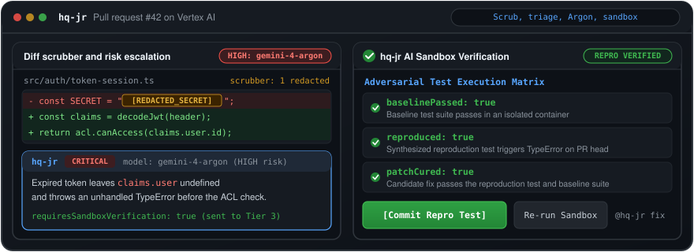

Headquarter Judge and Runner (hq-jr)
The self-hosted pull request reviewer that reproduces suspicious breaks in an isolated sandbox before it posts a verdict.
hq-jr strips lockfiles and secrets locally, triages diffs on gemini-3.8-flash, escalates high-risk pull requests to gemini-4-argon, and runs dual-commit red and green trials on antigravity-preview-05-2026.
> npm i -g hq-jr && hq-jr health
> docker pull ghcr.io/adi-il/hq-jr:latest
[REDACTED_SECRET].maxOutputTokens) on gemini-4-argon escalation.sandbox_jobs heartbeat lease across 180s max sandbox polling.Stage 0: Heuristic Filter & Scrubber
0 tokens · Local CPUDrops lockfiles, build artifacts, and binaries before any model call. Classifies remaining files by risk weight (SECURITY = 10 down to DOCUMENTATION = 1) and redacts credentials into [REDACTED_SECRET] while preserving env reads.
diff --git a/package-lock.json b/package-lock.json
-> classifyFile: OTHER (weight 0, ignored: true, 0 tokens)
diff --git a/src/auth/token-session.ts b/src/auth/token-session.ts
-> classifyFile: SECURITY (weight 10, matched root: 'auth', 'token')
- const SECRET = "[REDACTED_SECRET]";
+ const issuer = process.env.JWT_ISSUER || "[REDACTED_SECRET]";
+ const claims = decodeJwt(header);
+ return acl.canAccess(claims.user.id);{
"reviewableFiles": 1,
"ignoredFiles": [
"package-lock.json"
],
"category": "SECURITY",
"riskWeight": 10,
"secretsRedacted": 2,
"envReadsPreserved": [
"process.env.JWT_ISSUER"
],
"wrappedTag": "<untrusted_diff>"
}
Five-stage review funnel and interactive spend configurator
Most pull requests exit early on local heuristics or gemini-3.8-flash triage. Only high-risk reviews escalate to gemini-4-argon, and only suspicious breaks run in the isolated sandbox.
| Stage | Default model or runtime | Config variable | What runs | Spend guard |
|---|---|---|---|---|
| Stage 0: Filter and scrubber | Local CPU |
src/services/file-filter.tssrc/services/scrubber.ts |
Drops 9 lockfiles, 23 binary extensions, and 11 build directory prefixes. Ranks files by risk weight and scrubs secrets into [REDACTED_SECRET]. |
0 tokens spent on ignored files; caps payload at 30,000 chars per file and 120,000 chars total. |
| Stage 1: Tier 1 triage | gemini-3.8-flash |
HQ_JR_MODEL_TIER1 |
Scores per-file risk (LOW, MEDIUM, HIGH) and sets shouldReview under TRIAGE_RESPONSE_SCHEMA with ThinkingLevel.HIGH. |
Completes Check Run as success immediately when no file sets shouldReview: true. |
| Stage 2: Tier 2 deep review | gemini-3.8-flash |
HQ_JR_MODEL_TIER2 |
Runs full structured code review, line-anchored patch synthesis, and Octokit GitHub Action SHA/tag verification when risk is below the escalation gate. Optional override: gemini-3.1-pro-preview. |
Handles standard pull requests on Flash pricing without invoking Argon. |
| Stage 2b: Tier 2 escalation | gemini-4-argon |
HQ_JR_MODEL_ESCALATIONHQ_JR_ESCALATION_MIN_RISK=HIGH |
Escalates deep review when overallRisk >= HQ_JR_ESCALATION_MIN_RISK (~2.7x Flash token rate). Falls back once to HQ_JR_MODEL_TIER2 on quota or access error. |
HQ_JR_ESCALATION_MAX_OUTPUT_TOKENS=32768 output cap; assertCompleteResponse rejects truncated JSON. |
| Stage 3: Tier 3 sandbox | antigravity-preview-05-2026 |
HQ_JR_AGENT_TIER3 |
Synthesizes adversarial reproduction probes and runs dual-commit red and green trials inside an isolated Linux container when requiresSandboxVerification: true. |
Hard 150,000 total token cap (agent_config.max_total_tokens) and 180,000 ms polling cap. |
GOOGLE_CLOUD_PROJECT=your-gcp-project-id
GOOGLE_CLOUD_LOCATION=global
HQ_JR_MODEL_TIER1=gemini-3.8-flash
HQ_JR_MODEL_TIER2=gemini-3.8-flash
HQ_JR_MODEL_ESCALATION=gemini-4-argon
HQ_JR_ESCALATION_MIN_RISK=HIGH
HQ_JR_ESCALATION_MAX_OUTPUT_TOKENS=32768
HQ_JR_AGENT_TIER3=antigravity-preview-05-2026Stage 0 ingestion filter and credential scrubber
Before any prompt reaches Vertex AI, classifyFile ranks paths by security weight and scrubSecrets strips credentials while keeping environment variable reads intact.
| Category | Weight | Reviewable | Matching rules in src/services/file-filter.ts |
|---|---|---|---|
SECURITY |
10 |
Yes | Word roots auth, credential, crypto, jwt, middleware, permission, rbac, secret, token. Excludes false friends /^author(?!i[zs])/, /^tokeni[zs]/, and /^secretar/. |
BACKEND |
7 |
Yes | .ts, .js, .mjs, .cjs, .py, .go, .rs, .java, .kt, .rb, .php, .cs, .cpp, .c, .h, .hpp, .scala, .ex, .exs, .sql, .sh. |
FRONTEND |
6 |
Yes | .tsx, .jsx, .vue, .svelte, .html, .css, .scss, .less, and .svg (flagged for stored XSS and inline event handlers). |
CONFIG |
5 |
Yes | .json, .yaml, .yml, .toml, .ini, .env, Dockerfile, Makefile, .tf, .hcl, docs/package.json, and docs/tsconfig.json. |
TEST |
3 |
Yes | tests/, __tests__/, *.test.*, *.spec.*, and *_test.go. |
DOCUMENTATION |
1 |
No | .md, .mdx, .rst, .txt, .adoc, and non-manifest files under docs/. |
OTHER |
0 |
No | 9 lockfiles, 23 binary/font/archive extensions, 11 build prefixes (dist/, build/, node_modules/, vendor/), *.min.*, and *.bundle.js. |
Sorts reviewable files by descending risk weight. Caps each file at 30,000 characters and total prompt context at 120,000 characters, reserving up to 20% of the budget for the ignored file summary list and wrapping diffs in <untrusted_diff> tags.
| Pattern class | Scrubber behavior | Example input and output |
|---|---|---|
| 9 provider regex families | Redacts to [REDACTED_SECRET] |
PEM private keys (<YOUR_PRIVATE_KEY_PEM>), AWS AKIA/ASIA, GitHub PATs (ghp_, github_pat_), Slack tokens, Google API keys, JWTs, Stripe keys, High-entropy hex/base64, and Basic auth URLs. |
| 18 assignment keys | Redacts literals >= 8 chars (secret_key any length) |
password = "[REDACTED_SECRET]", api_key, client_secret, private_key, access_token, webhook_secret, database_url. |
| Safe env and config reads | Preserved when no literal fallback follows | Preserves process.env.API_KEY, Deno.env.get(...), Bun.env.X, os.environ, config.*, and vault.*. |
| Env read with literal fallback | Preserves env read, redacts literal fallback | process.env.JWT_SECRET ?? "[REDACTED_SECRET]" |
| Summary path scrubbing | Scrubs shortenSummaryPath output |
Runs scrubSecrets(rawSummary).scrubbedText before posting GitHub Check Run summaries. |
| Remediation code fences | Maps 15 extensions via FENCE_LANGUAGE_BY_EXT |
Maps .ts -> ts, .py -> python, .go -> go, .rs -> rust, .sh -> bash, .yml -> yaml for GitHub comment syntax highlighting. |
Tier 3 Antigravity sandbox verification and network guards
When deep review sets requiresSandboxVerification: true, hq-jr keeps the GitHub Check Run in_progress (conclusion: null) while polling antigravity-preview-05-2026 for up to 180,000 ms with a 45,000 ms SQLite WAL heartbeat lease. For same-repository pull requests, Tier 3 clones the PR branch inside an isolated container.
| Sandbox probe / conclusion | Identifier | Runtime contract |
|---|---|---|
| Probe archetypes (4) | UNIT_ASSERTIONPROPERTY_BASEDSUBPROCESS_PROBEFAULT_INJECTION |
Auto-detects runner by manifest: Cargo.toml -> cargo test, go.mod -> go test ./..., pyproject.toml / requirements.txt -> pytest, default npm test. |
| Failure kinds (5) | PANIC, EXCEPTION, RESOURCE_LEAK, WRONG_OUTPUT, CRASH |
Caps probe matrix at MAX_MATRIX_PROBES = 50 and summary output at MAX_SANDBOX_SUMMARY_CHARS = 60,000. |
| Reproduced & uncured | conclusion: "failure" |
reproduced === true && !patchCured. Exposes Check Run actions Commit Repro Test and Re-run Sandbox. |
| Cured or not reproduced | conclusion: "success" |
patchCured === true or break did not reproduce on PR head. |
| Timeout or infra fault | conclusion: "neutral" |
Polling exceeds 180,000 ms or upstream Vertex AI hits HQ_JR_AI_TIMEOUT_MS / 429 / 5xx (isAiInfraError). |
| Guard or allowlist | Source module | Enforcement detail |
|---|---|---|
SANDBOX_HOSTS allowlist |
src/services/sandbox-runner.ts |
github.com plus crates.io, static.rust-lang.org, index.crates.io (Rust); proxy.golang.org, sum.golang.org (Go); pypi.org, files.pythonhosted.org (Python); registry.npmjs.org, nodejs.org (Node). Zero wildcards. |
SYNTHESIZED_REPRO_MARKER |
src/services/sandbox-runner.ts |
Requires commit_repro_test payloads to come from Check Runs authored by hq-jr containing the synthesized marker and validates paths via isSafeReproTestPath (under tests/, no ..). |
resolveVerdict gate |
src/services/ai.ts |
Any CRITICAL or WARNING inline finding deterministically forces REQUEST_CHANGES even if the model returned APPROVE. |
verifyReviewActionRefs |
src/services/action-ref-verifier.ts |
Queries GitHub REST (git.getRef, repos.getCommit) to verify uses: owner/repo@ref tags, branches, and 40-char SHAs before flagging workflows. |
Generic AI review bots vs hq-jr and collaborator RBAC
hq-jr runs inside your own infrastructure, remembers resolved review threads across synchronize pushes via GitHub GraphQL and SQLite WAL, and gates every write command behind collaborator permission checks.
| Dimension | Generic SaaS AI review bots | hq-jr (Headquarter Judge and Runner) |
|---|---|---|
| Verification | Guesses from static diff text alone and posts unverified hypotheses. | Synthesizes adversarial probes and runs dual-commit red/green trials in an isolated container before claiming a break reproduces. |
| Memory | Re-comments on fixed issues on every push or loses state across restarts. | Queries unresolved GitHub GraphQL reviewThreads authored by hq-jr first, falling back to REST comments merged with local SQLite WAL (review_findings). |
| Noise | Spends tokens on lockfiles, minified bundles, and low-risk formatting diffs. | Drops 9 lockfiles, 23 binary extensions, and 11 build prefixes at 0 tokens, then exits early after Tier 1 Flash triage when no file needs deep review. |
| Etiquette | Hijacks human review threads and nags on every comment event. | Stays silent in human review threads unless @hq-jr is explicitly mentioned or hq-jr started the thread. Skips self-authored hq-jr/fix-pr-<id> pushes. |
| Hosting | Multi-tenant third-party SaaS holding long-lived repository tokens. | Self-hosted rootless Docker container authenticating via short-lived GitHub App installation tokens and Google Cloud ADC with zero static API keys. |
| Secrets | Forwards raw diff hunks containing credentials directly to model APIs. | Scrubs 9 credential regex families and 18 assignment keys into [REDACTED_SECRET] locally before prompt assembly; same-repo Tier 3 runs clone the PR branch inside the isolated sandbox. |
| Command or webhook surface | Required permission | Fork & head-repo policy | Execution behavior in src/index.ts & src/services/remediation.ts |
|---|---|---|---|
@hq-jr review | audit | scan | diff |
Any PR commenter | Allowed (read-only diff review) | Triggers the 5-stage review pipeline under the per-PR SQLite active_runs lock. |
@hq-jr fix | patch | remediate |
Collaborator admin or write |
Refuses fork PRs and null pr.head.repo both before synthesis and before commit |
Synthesizes fixes on HQ_JR_MODEL_REMEDIATION and commits to branch hq-jr/fix-pr-<number>. Supports @hq-jr fix and merge. |
@hq-jr commit-repro & [Commit Repro Test] |
Collaborator admin or write |
Refuses fork PRs and paths outside tests/ (isSafeReproTestPath) |
Verifies SYNTHESIZED_REPRO_MARKER on the hq-jr Check Run and commits the reproduction test directly to the PR branch. |
@hq-jr merge |
Collaborator admin or write |
Same-repo mergeable PR required | MERGE_COMMAND_RE blocks questions (?) and negations (do not merge, don't merge). Closes linked issues only after pulls.merge succeeds. |
pull_request_review_comment.created |
Thread participant | Read-only reply via HQ_JR_MODEL_DISCUSSION |
Replies only when @hq-jr is mentioned or hq-jr authored the thread root comment. |
Rootless deployment, auto-rollback timer, and environment reference
Deploy from pre-built GHCR images without a source checkout on the host. Every environment variable is validated at startup by Zod in src/config.ts.
Docker Compose + Vertex ADC
Runs on node:22-bookworm-slim with tini as PID 1 and non-root user hqjr (uid 1001, gid 1001). Binds 127.0.0.1:3000:3000, mounts /opt/hq-jr/gcloud:/gcloud:ro (0400), and persists SQLite WAL state in /opt/hq-jr/data:/app/data.
15-minute systemd timer & rollback
hq-jr-update.timer triggers deploy/update.sh every 15 minutes with flock concurrency control. Polls http://127.0.0.1:3000/livez for up to 60s after image swap and rolls back automatically while recording .last-failed-image on failure.
CLI & readiness endpoints
GET /livez serves liveness; GET /healthz probes Vertex AI on HQ_JR_MODEL_HEALTH with a 60s cache TTL. CLI supports hq-jr health, hq-jr review --diff <path>, hq-jr review --pr <n>, and hq-jr sandbox-test.
Variable (src/config.ts) |
Default value | Group | Role and startup validation rule |
|---|---|---|---|
HQ_JR_MODEL_TIER1 |
gemini-3.8-flash |
Models & spend | Stage 1 per-file risk triage model (non-empty string, ThinkingLevel.HIGH). |
HQ_JR_MODEL_TIER2 |
gemini-3.8-flash |
Models & spend | Stage 2 standard deep review model and fallback target when escalation fails (non-empty string). |
HQ_JR_MODEL_ESCALATION |
gemini-4-argon |
Models & spend | Stage 2b high-risk escalated deep review model (non-empty string). |
HQ_JR_ESCALATION_MIN_RISK |
HIGH |
Models & spend | Minimum triage overallRisk (LOW, MEDIUM, HIGH) required to escalate deep review to Argon. |
HQ_JR_ESCALATION_MAX_OUTPUT_TOKENS |
32768 |
Models & spend | Positive integer maxOutputTokens cap applied only to runEscalatedDeepReview on Argon. |
HQ_JR_MODEL_DISCUSSION |
gemini-3.8-flash |
Models & spend | Model for @hq-jr pull request review thread replies in src/services/discussion.ts. |
HQ_JR_MODEL_REMEDIATION |
gemini-3.8-flash |
Models & spend | Model for @hq-jr fix full-file remediation patch synthesis in src/services/remediation.ts. |
HQ_JR_AGENT_TIER3 |
antigravity-preview-05-2026 |
Models & spend | Stage 3 isolated Linux container agent for adversarial reproduction trials (150,000 token cap). |
GOOGLE_CLOUD_PROJECT |
test-gcp-project |
Runtime & auth | Google Cloud project ID billed for Vertex AI requests via Application Default Credentials. |
GOOGLE_CLOUD_LOCATION |
global |
Runtime & auth | Vertex AI endpoint location passed to @google/genai SDK initialization. |
HQ_JR_MODEL_HEALTH |
gemini-3.8-flash |
Runtime & auth | Model pinged by GET /healthz and hq-jr health readiness checks (cached for 60s). |
HQ_JR_AI_TIMEOUT_MS |
900000 |
Runtime & auth | Positive integer per-request abort timeout in milliseconds (15 minutes) enforced by aiFetch. |
HQ_JR_DB_PATH |
./data/hq-jr.db |
Runtime & auth | SQLite WAL database path storing review_findings, active_runs, and sandbox_jobs. |
PORT |
3000 |
Runtime & auth | HTTP port bound by the Probot webhook and health server. |
NODE_ENV |
development |
Runtime & auth | Runtime environment enum (development, production, test). |
LOG_LEVEL |
info |
Runtime & auth | Structured Pino log level emitted by Probot and CLI services. |